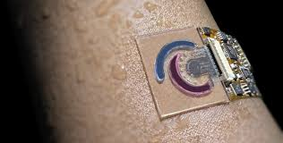
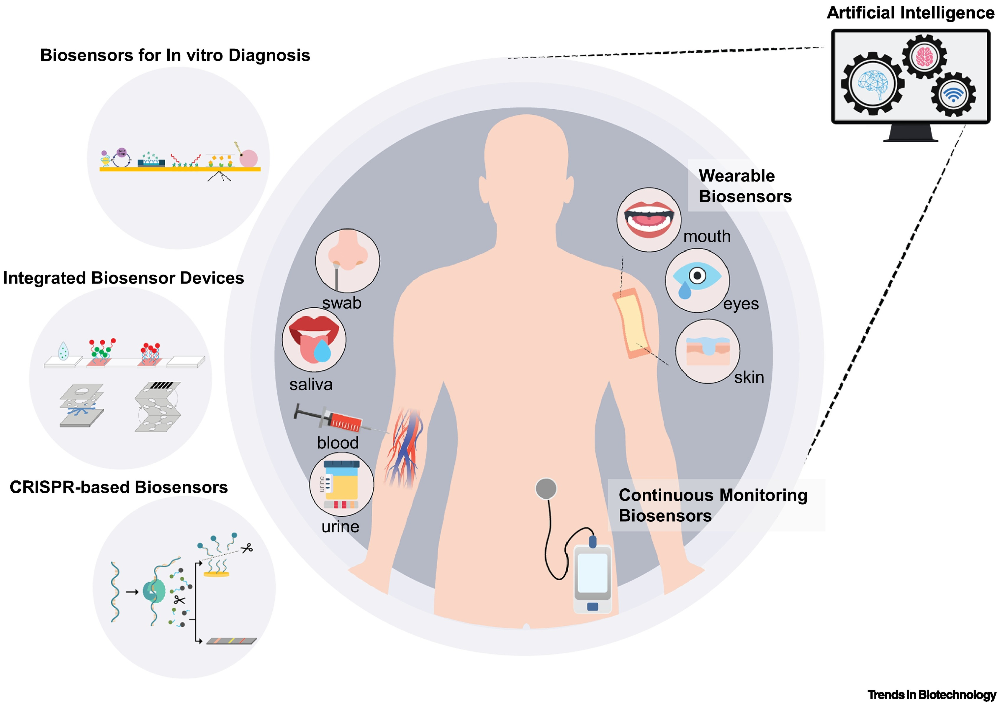

|
Monday-friday 8:00-19 |
Adress
|
Location
|
Biopharmacetic
|
|||||
| Home | Sign in | SignUP | ||||||
| Body Biosensor
Health care, or healthcare, is the improvement of health via the prevention, diagnosis, treatment, amelioration or cure of disease, illness, injury, and other physical and mental impairments in people. Health care is delivered by health professionals and allied health fields. Medicine, dentistry, pharmacy, midwifery, nursing, optometry, audiology, psychology, occupational therapy, physical therapy athletic training, and other health professions all constitute health care  |
Doctors |
|||||||
| Detecting Disease
Rapid diagnosis of diseases at their initial stage is critical for effective clinical outcomes and promotes general public health. Classical in vitro diagnostics require centralized laboratories, tedious work and large, expensive devices. In recent years, numerous electrochemical biosensorshave been developed and proposed for detection of various diseases based on specific biomarkers taking advantage of their features, including sensitivity, selectivity, low cost and rapid response. |
Running Technology | |||||||
| Health care services
Information from the outer world is obtained in virtue of the sense organs. A sensor is a device used to gather information registered by some biological, physical or chemical change, and then convert the information into a measurable signal. Typically, it contains a recognition element and a transducer. Electrochemical biosensors, as a subclass of biological sensors, consist of a biological sensing element and an electrochemical transduce  |
Senser Medical care | |||||||
Biosensor, a healthy care that protects human health and is a global leader in diagnostic reagents that supplies platforms from screening